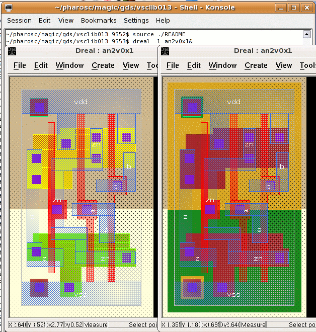

| vlsitechnology.org /Linux help/GDS layout | |
GDS layout | |
Linux help
Windows help
Linux Live CD
The layout of all the cells has been converted to GDS format in 0.13µm technology. It can be found at
pharosc/magic/gds |
The GDS files have been written from Magic. They have not been hacked, so there is no abutment box and no REF geometries.
The GDS files have the diffusion geometries both as separate N and P diffusions and as a single diffusion layer with separate N and P implant layers. The layer numbers can be found in the file
pharosc/alliance/etc/vsc200.rds |
in the section TABLE GDS_LAYER.
These are the MOSIS layer numbers,
not the Alliance ones.
The GDS files can be viewed with Dreal. The right environment can be set up by sourcing the README file in each GDS directory. The example on the right shows the GDS layout of the vsclib an2v0x1 cell in 0.13µm with separate N and P diffusions and as a single diffusion layer with separate N and P implant layers.
